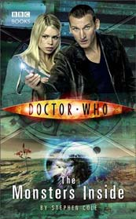

|
The Monsters Inside
|
BASIC PLOT DOCTOR COMPANIONS MATERIALISATION CIRCUIT PREPARATORY READING CONTINUITY REFERENCES Pg 8 "That had been back on Earth in the middle of an alien invasion. They'd beaten it together; he'd shown her she could make a difference to things." Rose. Pg 32 "Mum always said it would be Mickey who'd end up inside, not me." Jackie and Mickey first appeared in Rose and then throughout the 2005-2006 seasons. Pg 39 "The Doctor had met creatures like this before. He had fought them to the death." Aliens of London/World War Three. Pg 40 "You're from the planet Raxacoricofallapatorious, right?" The Slitheen homeworld. It's mentioned a lot throughout this book; I haven't noted the others. Pg 51 "Impersonating all kinds of creatures from Meeps to Kraals" The comics, The Android Invasion. Pg 52 "Impersonating aliens, nuking their planets and selling off the radioactive chunks as cheap fuel for every bargain-bucket spaceship in the galaxy?" Aliens of London/World War Three. Pg 53 "The Slitheen almost blew up Earth, you know. In the end they only blew up themselves." Aliens of London/World War Three. "We've been finding out all we can about the industrious Jocrassa Fel Fotch Pasameer-Day Slitheen and his compatriots." Aliens of London/World War Three. Pg 79 "In one of the pictures there was a creature who looked the living spit of Ecktosa Fel Fotch, wriggling with a grin out of a Martian's body armour." Martians first appeared in The Ice Warriors. Pg 126 "The big bad wolf's ready to blow our house down." Is anyone else surprised that the least subtle "bad wolf" reference, the only one ever to simply go for the source material and throw allegory or cleverness to the wind, should come from the pen of Steve Cole? Thought not. Pg 197 "Got you as their scientific advisor?" The Doctor was also a scientific advisor to UNIT, back in the seventies. Pg 214 "Only I know how you humans love your domestic stuff." This is especially true of Rose in the new series. Pg 219 "Do you mind not interrupting when I'm trying to save the world?" The ninth Doctor says something very similar at the end of Aliens of London. Fenric also says something similar about eulogising in The Curse of Fenric. Pg 252 "'Perhaps,' said the Doctor. 'Or perhaps he just wanted to be sure nothing was left of the creatures who killed his family.' He nodded. 'I can understand that.'" We see this in Dalek. OLD FRIENDS AND OLD ENEMIES NEW FRIENDS AND NEW ENEMIES Dram, Eckstosa and Callis Fel Foth Slitheen.
CONTINUITY COCK-UPS PLUGGING THE HOLES [Fan-wank theorizing of how to fix continuity cock-ups] FEATURED ALIEN RACES Pg 39 The Slitheen and other members of their race. Pg 63 An enormous three-legged person with an orange eye. A parade of odd-looking creatures who seem to be half-formouse, half-armadillo. A creature that looks like an orange woolly mammoth with four trunks. A green, skinny reptile-thing with a domed forehead, big webbed feet and black glistening nodules. A large blob whose skin is the consistency of stick toffee pudding with three blue eyes on marzipan stalks. (She's a Sucrosian, according to page 69.) FEATURED LOCATIONS Pg 54 Justicia Prime. Pg 78 Justice Beta. Pg 135 A shuttle. Pg 149 Justice Delta. Pg 249 Justice Alpha. IN SUMMARY - Robert Smith? |
|
 |